Префектура Канагава · Самукава · святилище
Святилище Самукава: защита от бед со всех восьми сторон и тайный сад за главным залом
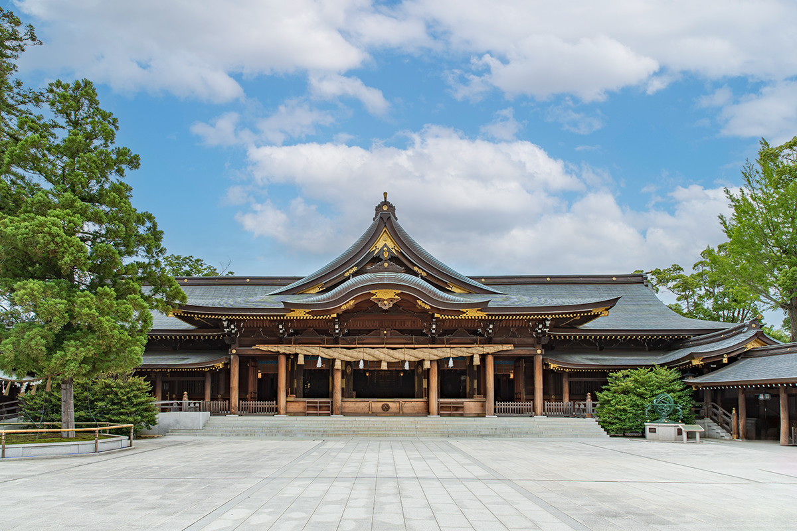
Святилище Самукава считается единственным в Японии, где почитают богов-хранителей «хаппо-ёкэ», защиты от несчастий со всех восьми сторон света. За главным залом скрыт сад, куда пускают только после молебна.
История
Полторы тысячи лет на южной окраине равнины
Река Сагами начинается у озера Яманака, у подножия Фудзи, и течёт через всю префектуру Канагава к морю. Примерно в 7 км от её устья, на невысоком плато к юго-западу от Токио, стоит святилище Самукава. Когда его основали, точно неизвестно. В летописи святилища записано, что подношения сюда делали ещё в правление императора Юряку (456–479), так что истории у него не меньше полутора тысяч лет.
В своде «Энгисики», составленном в 927 году, Самукава названо единственным «великим святилищем» провинции Сагами, а в старой системе рангов оно получило высший статус «ити-но мия», главного святилища провинции. Его почитали как хранителя восьми провинций Канто. Здесь чтут двух божеств, Самукава-хико-но микото и Самукава-химэ-но микото, которых вместе называют Самукава-даймёдзин.
Святилищу поклонялись и правители разных эпох. Ёритомо Минамото (1147–1199) основал в Камакуре первый в истории Японии сёгунат. Ёситоки Ходзё (1163–1224) после него фактически правил страной как регент сёгуна. Сингэн Такэда (1521–1573) был одним из самых грозных полководцев эпохи воюющих провинций.
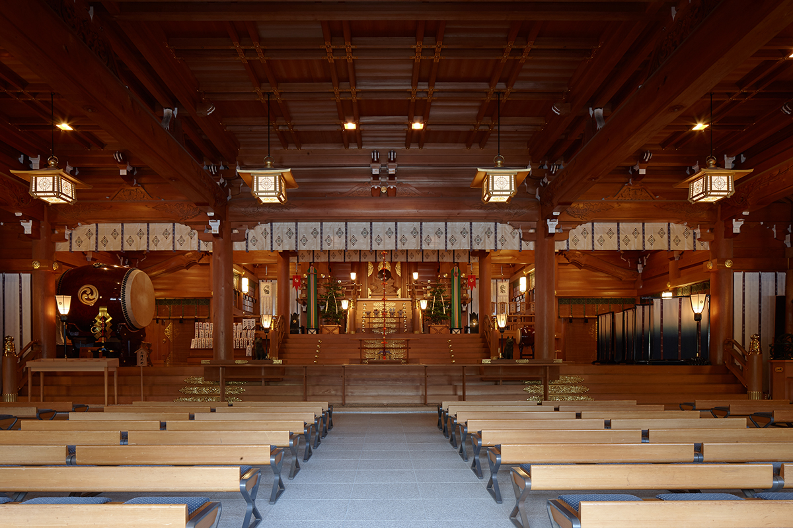
Хаппо-ёкэ
Защита со всех сторон
Обычно японские святилища обращены на юг или на восток. Главный зал Самукавы смотрит на юго-запад: святилище стоит на «задних воротах демонов» Эдо, на несчастливом юго-западном направлении от столицы сёгунов. С тех пор как в Эдо утвердился сёгунат, святилище почитают как стража этого направления и хранителя от бед, которые приходят с разных сторон.
«Хаппо-ёкэ» означает защиту от всех несчастий, которые японская традиция связывает с участком земли, устройством дома, направлением, днём календаря и «опасным возрастом», и вместе с ней благополучие во всём. Счастливые и несчастливые направления для каждого человека зависят от года рождения: по старому календарю их вычисляют по одной из девяти «звёзд судьбы». В год, когда твоя звезда стоит в центре схемы, путь закрыт со всех восьми сторон, и такой год считается самым опасным.
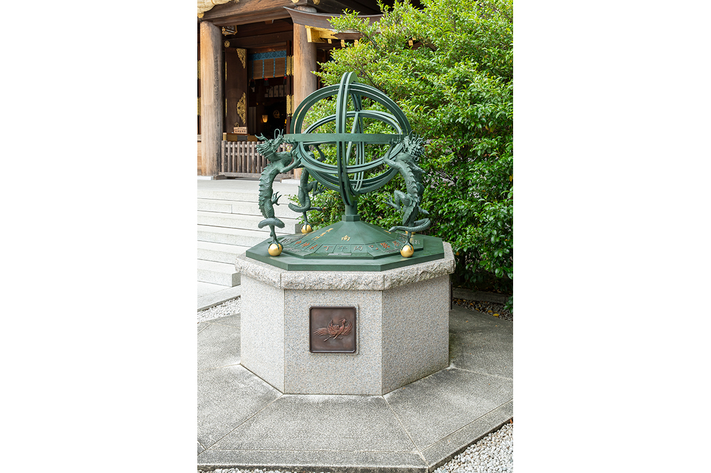
Молебнов здесь проводят около 300 000 в год, больше, чем где-либо ещё в Японии. Известный японский предсказатель, который много ездит по стране и за границу, каждый год обязательно приезжает сюда за молебном.
«Хаппо-ёкэ даёт только Самукава-даймёдзин. К тому же святилище стоит на линии силы, которая соединяет святилище Тамасаки в Тибе и Идзумо-тайся в Симанэ. В дни весеннего и осеннего равноденствия солнце проходит прямо над ней, поэтому её называют „дорогой восходящего солнца“. На той же линии стоят Фудзи, остров Тикубу и гора Ояма»
предсказатель
По его словам, однажды на территории святилища он встретил змею. Змей здесь считают посланниками богов и знаком удачи, особенно в деньгах. Сама территория святилища тонет в густой зелени, и в ней действительно чувствуется что-то таинственное.
Сад
Кантакэяма: роща, куда раньше не ступала нога человека
За главным залом лежит сад. Раньше это была роща на холме Кантакэяма, заповедная земля, куда людям входить запрещалось. В 2009 году здесь обустроили сад «Кантакэяма синъэн», и с тех пор в него пускают тех, кто заказал молебен в главном зале.
Сад построен по принципу «син, гё, со», трёх ступеней от строгого к свободному. «Син» это священная зона богов, «гё» соединяет богов и людей, «со» это мир, где живут люди. В зоне «син», кроме самого холма, прямо за главным залом лежит маленький пруд, с которым, по преданию, связано происхождение святилища. Из него до сих пор бьёт священный источник. Возможно, до появления святилища люди поклонялись самому этому пруду как воплощению божества.
«Хорошая удача собирается там, где из земли бьёт священная вода. Вдохните глубоко через нос и наберите её в себя»
предсказатель
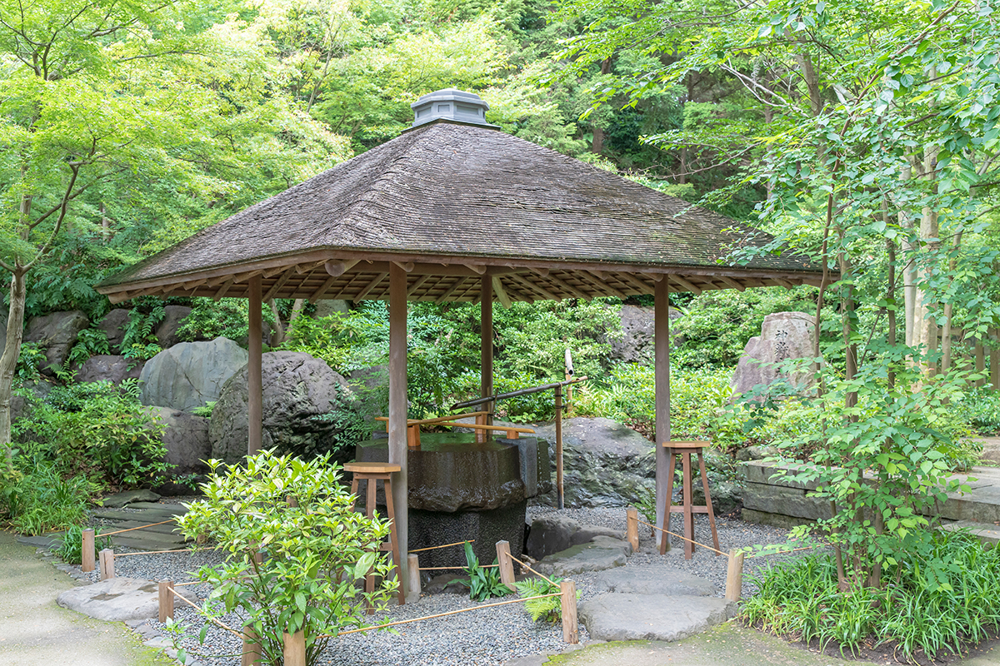
Внутренние ворота служат границей. За ними начинаются зоны «гё» и «со»: японский сад с прогулочной тропой вокруг пруда. Здесь же музей святилища, где выставлены материалы о его истории и о хаппо-ёкэ, и чайный домик «Вараку-тэй» с маття и сладостями.
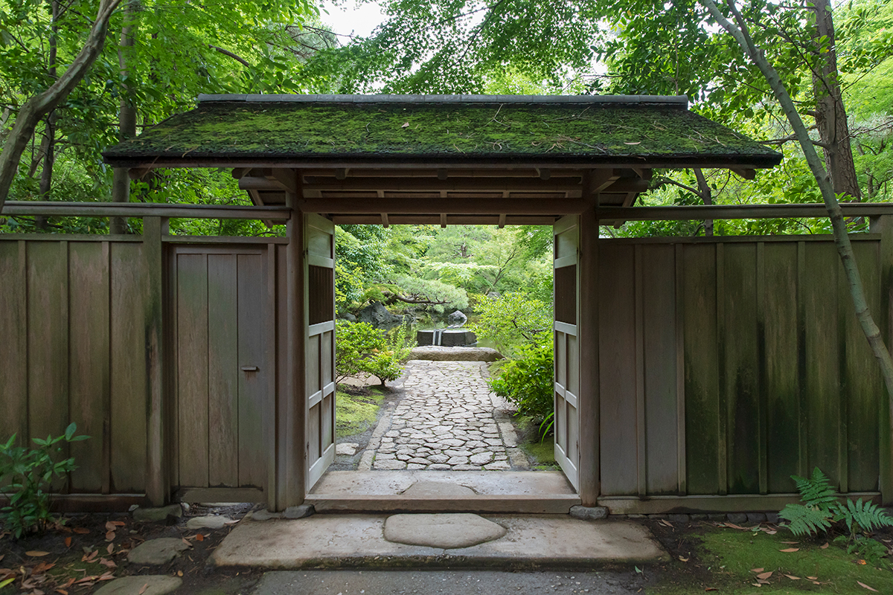
Ворота и мост отмечают границы зон. Мост здесь земляной: деревянный настил покрыт слоем земли, и такой мост, как считают, есть только в Самукаве. Основа моста сделана из каштана из Тамбы под Киото, а края выложены мхом.
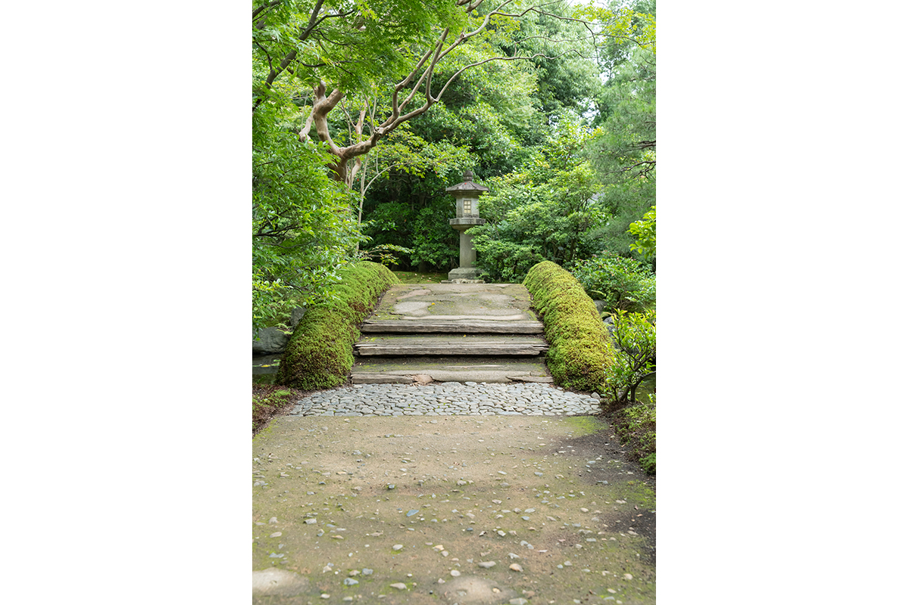
Сад считается местом, где боги и люди собираются вместе и радуются, поэтому в зоне «со» можно просто посидеть и посмотреть на пруд. Сладости к чаю делают специально для святилища в Канадзаве, в кондитерской «Ракуган Мороэя».
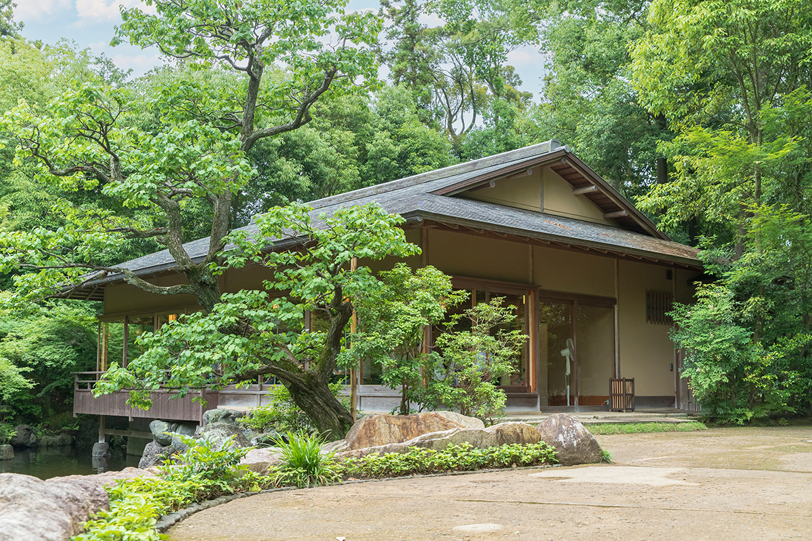
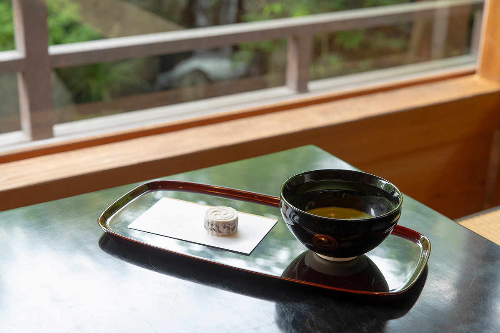
Сад Кантакэяма
- Даты
- с начала марта по 13 декабря, зимой (с середины декабря до начала марта) закрыт
- Часы работы
- 9:00–16:00; чайный домик 9:30–15:30
- Выходные
- понедельник (в праздники открыт)
- Цены / Вход
- только для тех, кто заказал молебен в главном зале; маття со сладостью от 500 иен
Путь
Как идти к главному залу
Предсказатель советует накануне лечь спать с мыслью о том, что завтра идёшь в святилище, и прийти до полудня. Ближайшая станция линии JR Сагами называется Мияма, но лучше выйти на соседней станции Самукава: от неё около 10 минут пешком до первых ворот-тории, откуда и начинается дорога к святилищу.
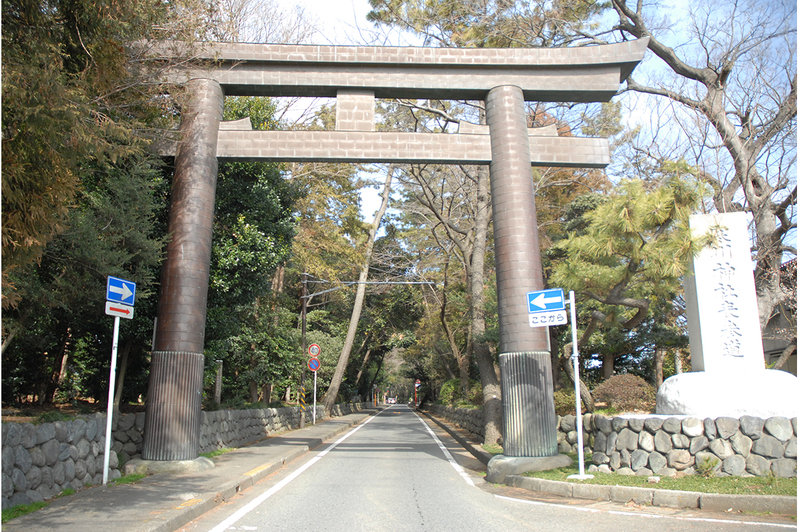
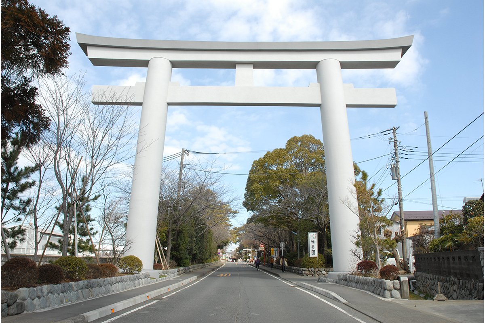
За вторыми тории дорога ведёт прямо к мостику через ручей.
«Пройти через тории, перейти мост, омыть руки: всё это способы сбросить с себя беду. Представьте, как вода уносит всё нечистое, что к вам пристало»
предсказатель
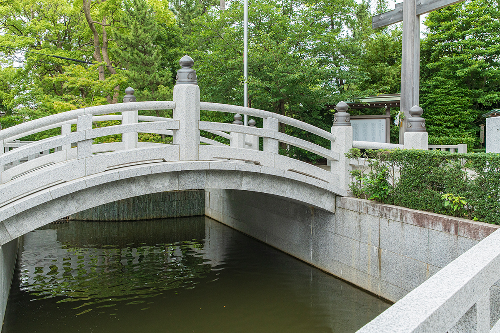
За мостом стоят третьи тории. Тории отделяют обычный мир от владений богов, поэтому перед каждыми, и перед третьими тоже, принято поклониться. После молитвы, выйдя за ворота, стоит повернуться к главному залу и поклониться ещё раз.
Середина дорожки называется «сэйтю», по ней ходят боги, поэтому людям лучше держаться края. Дальше будет павильон для омовения: здесь моют руки и полощут рот, а потом проходят через ворота к главному залу.
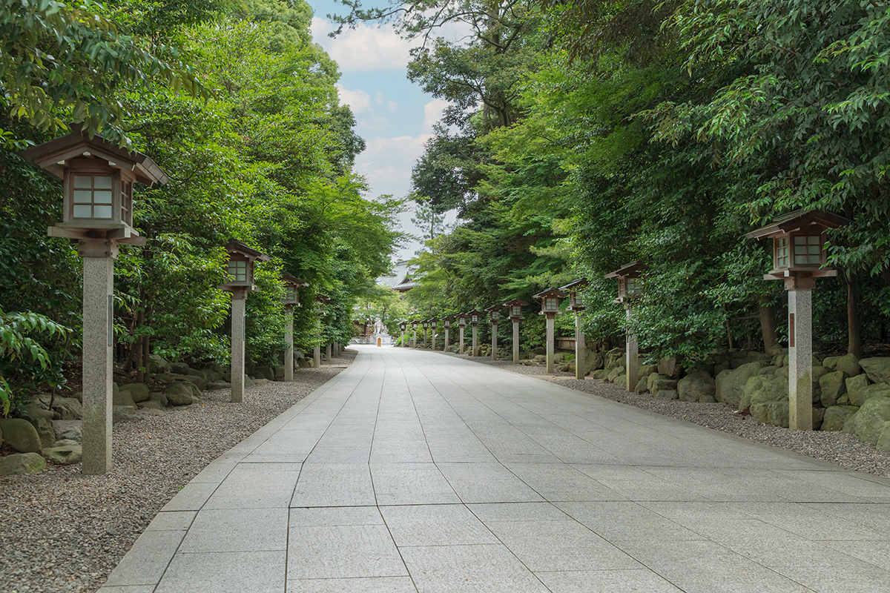
У главного зала тихо бросают монетку, дважды глубоко кланяются, дважды хлопают в ладоши, про себя называют свой адрес, имя и дату рождения и только потом молятся. В конце кланяются ещё раз и отходят. Предсказатель советует положить 105 иен или заказать молебен, если хватает времени.
Святилище Самукава
- Адрес
- префектура Канагава, уезд Кодза, Самукава, Мияма, 3916
- Телефон
- +81 467-75-0004
- Часы работы
- с 6:00 до заката, молебны 8:00–17:00 (на Новый год и летом часы меняются)
- Выходные
- нет
- Цены / Вход
- молебен от 3000 иен
- Как добраться
- станция Мияма линии JR Сагами или около 10 минут пешком от станции Самукава до первых тории
Фото: Кадзуя Хаяси, святилище Самукава.